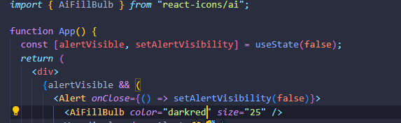

HOME
Adding Icons
The install Command
This is the last thing we will cover in this section.
We will use a popular icon library called 'React Icons'.
Run this in terminal for latest version...
In this course we are using version...
Finding Icons
react-icons Docs
you can search for icons. They have a ton, and they are categorized.
Using your icon
When you find an icon you like click it and its name will be copied to
clipboard.
In the
Docs
you will find code for the necessary import.
Finally, use the icon like its a react component.

It has built in props for color and size! Yayy!!!🥳